Beispiel-InfografikFeuchteschutz im Mauerwerk
Vom feuchten
Problem zur
trockenen Lösung
Aufsteigende Feuchtigkeit schädigt die Bausubstanz von innen. Der BKM-Schutzaufbau stoppt den Wassertransport im Mauerwerk — Schicht für Schicht.
3 Phasen
vom Problem über den Übergang zur dauerhaften Trockenheit
< 0,5 mm
Bohrlochabstand-Toleranz für eine lückenlose Horizontalsperre
100 %
mineralische Basis — diffusionsoffen und kapillaraktiv
Der Schutzaufbau in 3 Phasen
Phase 01 — Problem
Feuchtigkeit
Wasser steigt kapillar im Mauerwerk auf und transportiert Salze in die Bausubstanz.
Phase 02 — Übergang
Injektion
Die Injektionstechnik bildet eine durchgehende Horizontalsperre und unterbricht den Wassertransport.
Phase 03 — Lösung
Trockenheit
Das Mauerwerk trocknet kontrolliert ab — die Bausubstanz bleibt dauerhaft geschützt.